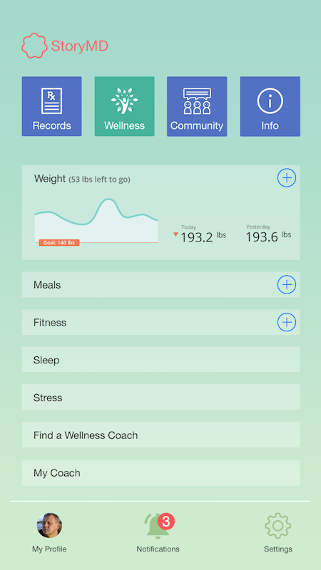
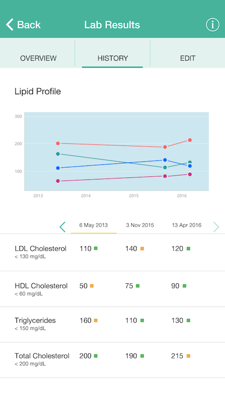
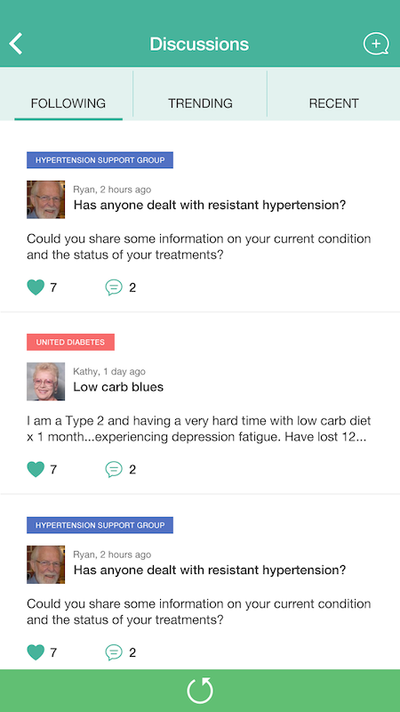
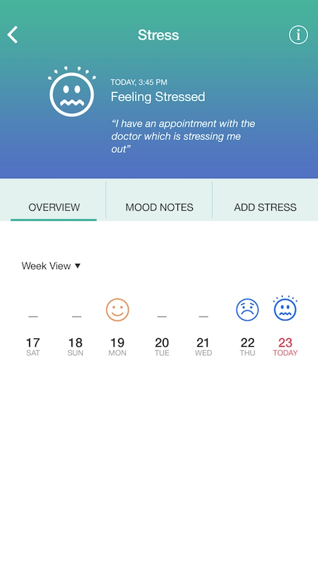
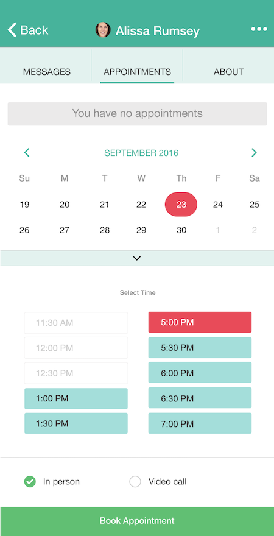

Portfolio: TheVisualMD - MobileApp
After successfully designing the website for TheVisualMD, the next big challenge was to display the vast content for mobile devices. Simply making the site responsive was not enough; we had to rethink the content organisation to make it easy to use on mobile.
We followed the iOS design standards for most of the interaction and navigation patterns.



